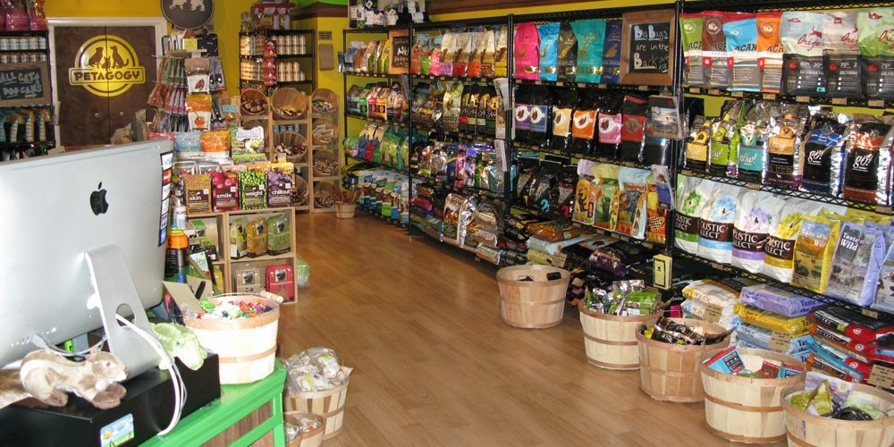

Os pet shops vendem uma variedade de produtos, incluindo alimentos, acessórios, medicamentos e itens de higiene¹.
Além disso, eles oferecem serviços como banho e tosa, consultas veterinárias e tratamentos alternativos¹.
Apesar dos preços geralmente serem um pouco mais altos do que em outros lugares, os pet shops compensam isso
com a qualidade dos serviços oferecidos, como atendimento especializado e diversidade de produtos¹.
Portanto, se você está pensando em adquirir um animal de estimação, um pet shop é um ótimo lugar para começar.
Além de encontrar diversas opções de animais, você terá acesso a um atendimento especializado e a produtos de qualidade¹.
(1) Pet shop: como montar, o que se vende, produtos e serviços - Pesca Gerais. https://blog.pescagerais.com.br/pet-shop/.
(2) Administração de pet shops: guia completo para gestores - SimplesVet. https://simples.vet/blog/gestao/gestao-de-pet-shop/.
(3) Como Montar Um Pet Shop: aprenda todos os passos necessários. https://vetus.com.br/universidade/como-montar-um-pet-shop/.